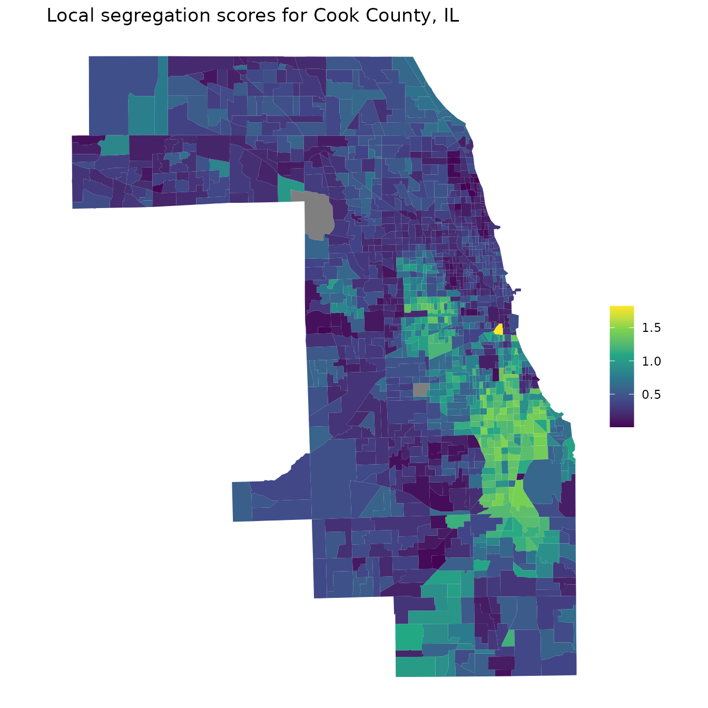

Can index X be added to the package?
Adding new segregation indices is not a big trouble. Please open an issue on GitHub to request an index to be added.
How can I compute indices for different areas at once?
If you use the dplyr package, one pattern that works
well is to use group_modify. Here, we compute the pairwise
Black-White dissimilarity index for each state separately:
library("segregation")
library("dplyr")
schools00 %>%
filter(race %in% c("black", "white")) %>%
group_by(state) %>%
group_modify(~ dissimilarity(
data = .x,
group = "race",
unit = "school",
weight = "n"
))
#> # A tibble: 3 × 3
#> # Groups: state [3]
#> state stat est
#> <fct> <chr> <dbl>
#> 1 A D 0.706
#> 2 B D 0.655
#> 3 C D 0.704A similar pattern works also well with data.table:
library("data.table")
schools00 <- as.data.table(schools00)
schools00[
race %in% c("black", "white"),
dissimilarity(data = .SD, group = "race", unit = "school", weight = "n"),
by = .(state)
]
#> state stat est
#> 1: A D 0.7063595
#> 2: B D 0.6548485
#> 3: C D 0.7042057To compute many decompositions at once, it’s easiest to combine the
data for the two time points. For instance, here’s a dplyr
solution to decompose the state-specific M indices between 2000 and
2005:
# helper function for decomposition
diff <- function(df, group) {
data1 <- filter(df, year == 2000)
data2 <- filter(df, year == 2005)
mutual_difference(data1, data2, group = "race", unit = "school", weight = "n")
}
# add year indicators
schools00$year <- 2000
schools05$year <- 2005
combine <- bind_rows(schools00, schools05)
combine %>%
group_by(state) %>%
group_modify(diff) %>%
head(5)
#> # A tibble: 5 × 3
#> # Groups: state [1]
#> state stat est
#> <fct> <chr> <dbl>
#> 1 A M1 0.409
#> 2 A M2 0.445
#> 3 A diff 0.0359
#> 4 A additions -0.0159
#> 5 A removals 0.0390Again, here’s also a data.table solution:
How can I use Census data from tidycensus to compute
segregation indices?
Here are a few examples thanks to Kyle Walker, the author of the tidycensus package.
First, download the data:
library("tidycensus")
cook_data <- get_acs(
geography = "tract",
variables = c(
white = "B03002_003",
black = "B03002_004",
asian = "B03002_006",
hispanic = "B03002_012"
),
state = "IL",
county = "Cook"
)
#> Getting data from the 2018-2022 5-year ACSBecause this data is in “long” format, it’s easy to compute segregation indices:
# compute index of dissimilarity
cook_data %>%
filter(variable %in% c("black", "white")) %>%
dissimilarity(
group = "variable",
unit = "GEOID",
weight = "estimate"
)
#> stat est
#> 1: D 0.7816367
# compute multigroup M/H indices
cook_data %>%
mutual_total(
group = "variable",
unit = "GEOID",
weight = "estimate"
)
#> stat est
#> 1: M 0.5058722
#> 2: H 0.4031731Producing a map of local segregation scores is also not hard:
library("tigris")
library("ggplot2")
local_seg <- mutual_local(cook_data,
group = "variable",
unit = "GEOID",
weight = "estimate",
wide = TRUE
)
# download shapefile
seg_geom <- tracts("IL", "Cook", cb = TRUE, progress_bar = FALSE) %>%
left_join(local_seg, by = "GEOID")
#> Retrieving data for the year 2022
ggplot(seg_geom, aes(fill = ls)) +
geom_sf(color = NA) +
coord_sf(crs = 3435) +
scale_fill_viridis_c() +
theme_void() +
labs(
title = "Local segregation scores for Cook County, IL",
fill = NULL
)
Can I compute local segregation scores for the H index?
See this paper for more information. The short answer is that you can divide the local segregation scores of the M index by the entropy of the group distribution. A weighted average of these scores must then equal the H index, as the H index is just the M index divided by the entropy of the group distribution.
Here’s an example:
(mutual_total(schools00, "race", "school", weight = "n"))
#> stat est
#> 1: M 0.4255390
#> 2: H 0.4188083
local <- mutual_local(schools00, "race", "school", weight = "n", wide = TRUE)
(local[, sum(p * ls)]) # same as M index above
#> [1] 0.425539
local[, ls_H := ls / entropy(schools00, "race", weight = "n")]
(local[, sum(p * ls_H)]) # same as H index above
#> [1] 0.4188083How can I compute margins-adjusted local segregation scores?
When using mutual_difference, supply
method = "shapley_detailed" to get two different local
segregation scores that are margins-adjusted (one is coming from
adjusting forward, the other from adjusting backwards). By averaging
them we can create a single margins-adjusted local segregation
score:
diff <- mutual_difference(schools00, schools05, "race", "school",
weight = "n", method = "shapley_detailed"
)
diff[stat %in% c("ls_diff1", "ls_diff2"),
.(ls_diff_adjusted = mean(est)),
by = .(school)
]
#> school ls_diff_adjusted
#> 1: A1_3 -0.088983164
#> 2: A2_2 -0.044338042
#> 3: A2_3 -0.101696519
#> 4: A2_4 -0.020134162
#> 5: A2_6 -0.138567163
#> ---
#> 1706: C164_2 -0.031329845
#> 1707: C165_1 -0.023978101
#> 1708: C165_3 0.003781632
#> 1709: C166_1 0.010270713
#> 1710: C167_1 -0.002663687